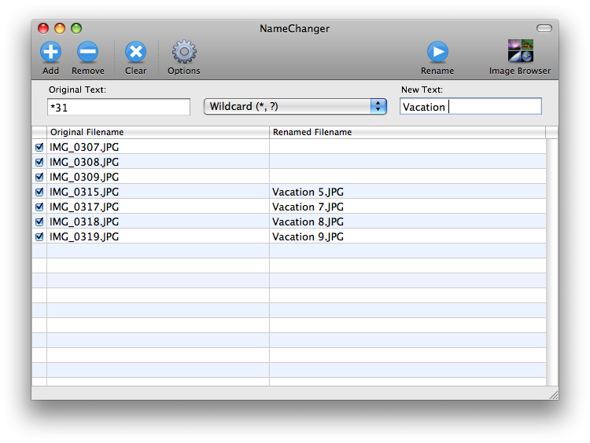

Wildcard
Type: Texutal Rename
Two
kinds of wildcards are currently supported in NameChanger:
'*'(asterisk) and '?' (question mark). The * will match any
number of characters. The ? will match a single character.
For example, the following wildcards will match the filename IMG_0291.JPG:- IMG*.JPG
- *.JPG
- *
- IMG?0291.JPG
- IMG_02??.JPG
- ????????????
For
each file in the table, NameChanger will find the first block of text
that matches the given wildcard text in the Original Text field and replace it with the text from the New Text field. If the wildcard text is not found for a particular file, that file will not be renamed. The Ignore Case option can be used to disregard case differences between the field and the Original Text field and the filename listed in the Original Filename column. The Force Unique option can be used to prevent name collisions form the resulting name changes. To avoid changing file extensions, the Hide Extensions option can be used.
